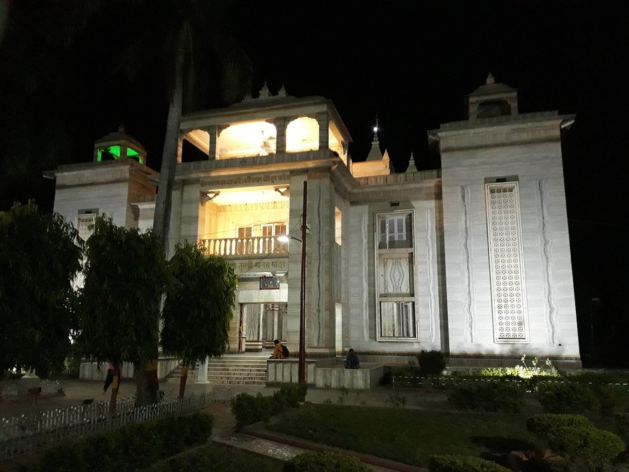

Tulsi Manas Temple
The temple built where Tulsidas is said to have written the Ramcharitmanas.
Tulsi Manas Temple
Tulsi Manas Temple is a modern marble temple dedicated to Rama, built on the site traditionally identified as the place where the poet-saint Tulsidas composed the Ramcharitmanas — the retelling of the Ramayana in Awadhi that became the devotional heart of North India.
History & significance
The temple was built in 1964 by the Birlas, on land associated with Tulsidas. Its walls carry engraved verses from the Ramcharitmanas, so that the poem is literally built into the architecture.
The site sits close to Durga Kund and the southern old city, in a neighbourhood dense with temples and maths. The marble interior and the engraved couplets make it unusual among Varanasi's shrines.
Why visit
It is a quieter, more contemplative temple than the riverside ones, and the engraved verses make it a place to read as well as pray. A natural pairing with Durga Kund.
The place in pictures
Destination photography via Wikimedia Commons, licensed CC BY / CC BY-SA / CC0. See image credits.
Before you go
- Photography inside the sanctum is restricted.
- The engraved Ramcharitmanas verses on the walls are worth taking time over.
- Combine with Durga Kund, a short walk or drive away.
- Mornings are calmest.
Getting there
Approximate distance from Pearl Courtyard: ≈ 3.7 km. Our travel desk can arrange a car, an auto-rickshaw or a guided walk.
Related destinations


Stay close to it all